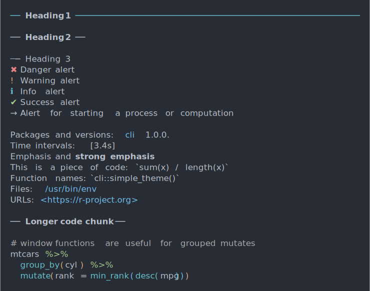

This theme is always active, and it is at the bottom of the theme stack. See themes.
builtin_theme(dark = getOption("cli_theme_dark", "auto"))
| dark | Whether to use a dark theme. The |
|---|
A named list, a CLI theme.
cli_h1("Heading 1") cli_h2("Heading 2") cli_h3("Heading 3") cli_par() cli_alert_danger("Danger alert") cli_alert_warning("Warning alert") cli_alert_info("Info alert") cli_alert_success("Success alert") cli_alert("Alert for starting a process or computation", class = "alert-start") cli_end() cli_text("Packages and versions: {.pkg cli} {.version 1.0.0}.") cli_text("Time intervals: {.timestamp 3.4s}") cli_text("{.emph Emphasis} and {.strong strong emphasis}") cli_text("This is a piece of code: {.code sum(x) / length(x)}") cli_text("Function names: {.fn cli::simple_theme}") cli_text("Files: {.file /usr/bin/env}") cli_text("URLs: {.url https://r-project.org}") cli_h2("Longer code chunk") cli_par(class = "code R") cli_verbatim( '# window functions are useful for grouped mutates', 'mtcars %>%', ' group_by(cyl) %>%', ' mutate(rank = min_rank(desc(mpg)))')
